{kind=link}
stickers
Tilted cards, chunky rings, a little lift.
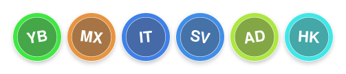
- uses: YauhenBichel/readme-contributors@v1.5.0
with:
token: ${{ secrets.GITHUB_TOKEN }}
layout: stickers
GitHub Action · v1.5.0
Fill a README with clickable polaroid stickers from the GitHub API. Bots are omitted. Each face is its own link. The SVG layouts below are for Pages. Any public repository can pin the v1.5.0 release.
Live demo: tap a card. These are the py-harness contributors, the same polaroids the Action writes into a README. The SVG stickers layout is the Pages drawing.
A GitHub Action that fills a README with the people who committed. Each person is a polaroid: face, name, a bit of tilt. Each card is its own link. Bots are omitted. No table. No third-party list service.
GitHub cannot click a face inside one SVG. One picture is one link. A wall.svg with six heads looks clickable. It is not. This Action writes one card per person. Tap it, you land on their GitHub.
Same wall as the live cards above. 18 seconds. No voiceover.
Public repositories that pin this Action on their default branch.
Search every public workflow
that pins YauhenBichel/readme-contributors@.
Also live:
molecare-desktop.
README.md.
.github/faces, and .github/contributors.svg when you keep the SVG wall.
Markers:
<!-- readme: contributors,bots/- -start --> <!-- readme: contributors,bots/- -end -->
Minimal workflow:
name: Contributors
on:
schedule: [{ cron: "17 4 * * 0" }]
workflow_dispatch:
permissions:
contents: write
jobs:
readme:
runs-on: ubuntu-latest
steps:
- uses: actions/checkout@v7
- uses: YauhenBichel/readme-contributors@v1.5.0
with:
token: ${{ secrets.GITHUB_TOKEN }}
- run: |
git config user.name github-actions[bot]
git config user.email 41898282+github-actions[bot]@users.noreply.github.com
git add README.md .github/contributors.svg .github/faces
git diff --cached --quiet && exit 0
git commit -m "docs: refresh README contributors"
git push
A protected default branch should open a pull request instead of pushing. A copy-paste job is in examples/contributors.yml.
Set layout. The default stays the overlapping facepile. The README wall is always the clickable polaroids.
Tilted cards, chunky rings, a little lift.

- uses: YauhenBichel/readme-contributors@v1.5.0
with:
token: ${{ secrets.GITHUB_TOKEN }}
layout: stickers
Overlapping circles. First person sits on top.
- uses: YauhenBichel/readme-contributors@v1.5.0
with:
token: ${{ secrets.GITHUB_TOKEN }}
layout: facepile
Spaced circles. Wraps at columns.
- uses: YauhenBichel/readme-contributors@v1.5.0
with:
token: ${{ secrets.GITHUB_TOKEN }}
layout: grid
Rounded squares instead of circles.
- uses: YauhenBichel/readme-contributors@v1.5.0
with:
token: ${{ secrets.GITHUB_TOKEN }}
layout: tiles
Avatar, name, and login on each row.
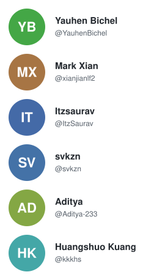
- uses: YauhenBichel/readme-contributors@v1.5.0
with:
token: ${{ secrets.GITHUB_TOKEN }}
layout: list
A tighter grid when the list is long.
- uses: YauhenBichel/readme-contributors@v1.5.0
with:
token: ${{ secrets.GITHUB_TOKEN }}
layout: compact
A sine-staggered row. Good for a short team.
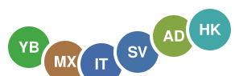
- uses: YauhenBichel/readme-contributors@v1.5.0
with:
token: ${{ secrets.GITHUB_TOKEN }}
layout: wave
The first contributor in the middle, the rest on a ring.
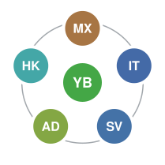
- uses: YauhenBichel/readme-contributors@v1.5.0
with:
token: ${{ secrets.GITHUB_TOKEN }}
layout: orbit
Hex tiles on offset rows.
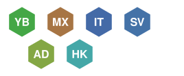
- uses: YauhenBichel/readme-contributors@v1.5.0
with:
token: ${{ secrets.GITHUB_TOKEN }}
layout: honeycomb
A zipper row that steps up and down.
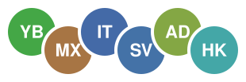
- uses: YauhenBichel/readme-contributors@v1.5.0
with:
token: ${{ secrets.GITHUB_TOKEN }}
layout: ribbon
Faces with faint links between neighbours.
- uses: YauhenBichel/readme-contributors@v1.5.0
with:
token: ${{ secrets.GITHUB_TOKEN }}
layout: constellation
The first person is larger; the others sit beside them.
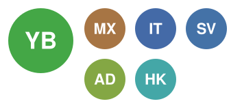
- uses: YauhenBichel/readme-contributors@v1.5.0
with:
token: ${{ secrets.GITHUB_TOKEN }}
layout: banner
Set theme. auto follows the reader’s light
or dark README. The others paint a frame.
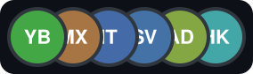
- uses: YauhenBichel/readme-contributors@v1.5.0
with:
token: ${{ secrets.GITHUB_TOKEN }}
layout: facepile
theme: midnight
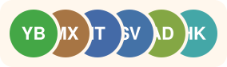
theme: sunrise
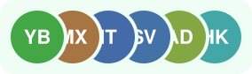
theme: forest
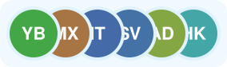
theme: ocean
theme: mono
theme also accepts auto and github.